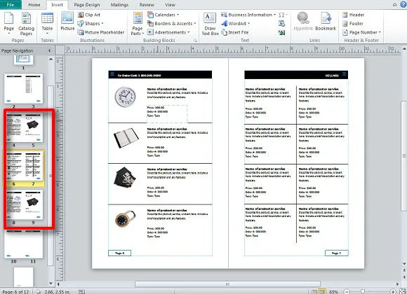
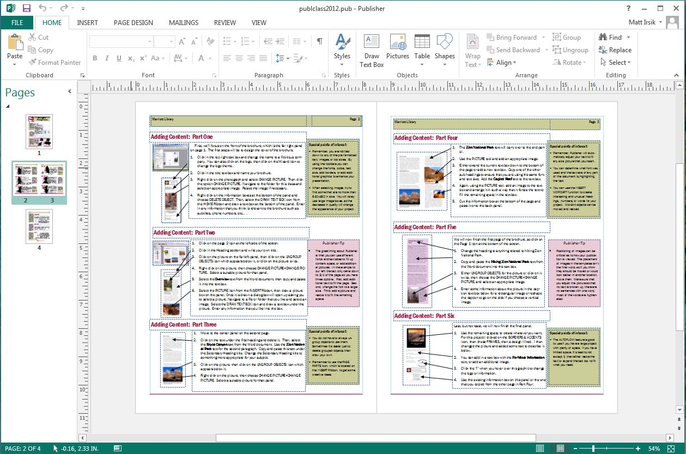
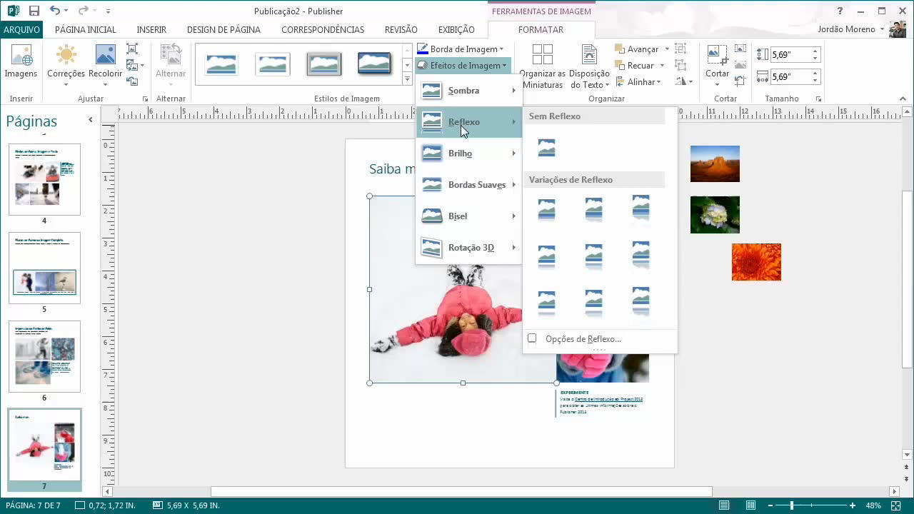
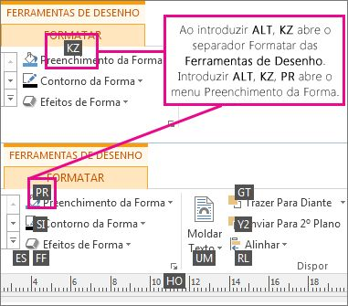
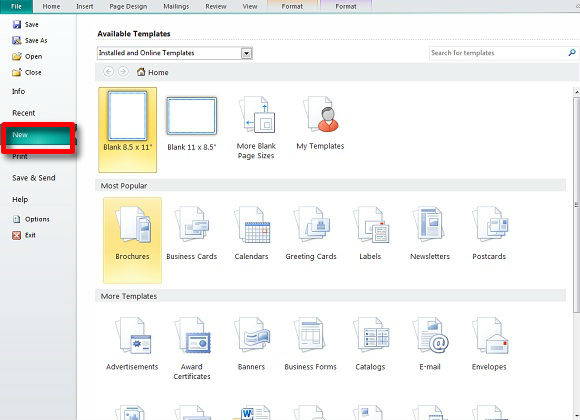
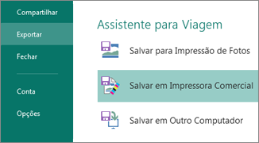

Publisher
O Microsoft Publisher é um software de editoração eletrônica que faz parte da suíte de aplicativos Microsoft Office. Ele é projetado para ajudar os usuários a criar uma variedade de materiais de design, desde documentos simples até publicações mais elaboradas.

História do Publisher
A história do Microsoft Publisher está intrinsecamente ligada à evolução da editoração eletrônica e à trajetória da Microsoft como empresa de software. Aqui está um resumo da história do Microsoft Publisher:
Funções do Publisher
O Microsoft Publisher é um software de editoração eletrônica desenvolvido pela Microsoft. Sua função principal é permitir que os usuários criem e personalizem uma variedade de materiais de design, desde documentos simples até publicações mais complexas. Aqui estão algumas das principais funções do Microsoft Publisher:
1. Criação de Materiais Impressos: O Publisher permite criar uma ampla gama de materiais impressos, como panfletos, folhetos, cartões de visita, convites, calendários, boletins, cartazes e muito mais.
2. Modelos Pré-Definidos: O software oferece uma coleção de modelos pré-definidos que os usuários podem usar como ponto de partida para seus projetos. Isso é particularmente útil para pessoas que não têm experiência em design, pois facilita a criação de documentos visualmente atraentes.
2. Modelos Pré-Definidos: O software oferece uma coleção de modelos pré-definidos que os usuários podem usar como ponto de partida para seus projetos. Isso é particularmente útil para pessoas que não têm experiência em design, pois facilita a criação de documentos visualmente atraentes.
3. Personalização de Design: Os usuários podem personalizar os modelos existentes, alterando cores, fontes, imagens, layout e outros elementos para atender às suas necessidades e preferências.
4. Inserção de Texto: O Publisher permite adicionar e formatar texto em seus projetos. Os usuários podem criar caixas de texto, aplicar estilos de fonte, tamanho e cor, além de alinhar o texto de acordo com o layout desejado.
5. Inclusão de Imagens e Gráficos: É possível inserir imagens, ilustrações e gráficos nos projetos. O Publisher oferece recursos básicos de edição de imagens, como redimensionamento, recorte e ajuste de brilho/contraste.
6. Ferramentas de Desenho: O software possui ferramentas de desenho básicas que permitem criar formas, linhas e outros elementos gráficos diretamente no documento.
7. Camadas: O Publisher permite organizar elementos em camadas, o que facilita o gerenciamento de elementos sobrepostos e complexos.
8. Exportação para Impressão: Os projetos criados no Publisher podem ser exportados em formatos adequados para impressão profissional, como arquivos PDF ou arquivos de imagem de alta resolução.
9. Integração com Outros Aplicativos: O Publisher é integrado ao restante da suíte Microsoft Office, o que significa que os usuários podem incorporar elementos de outros aplicativos, como gráficos do Excel ou tabelas do Word, em seus projetos.

10. Publicação Online: Além de impressão, o Publisher também permite que os projetos sejam salvos em formatos adequados para publicação online, como imagens da web ou documentos interativos em PDF.

5. Inclusão de Imagens e Gráficos: É possível inserir imagens, ilustrações e gráficos nos projetos. O Publisher oferece recursos básicos de edição de imagens, como redimensionamento, recorte e ajuste de brilho/contraste.
6. Ferramentas de Desenho: O software possui ferramentas de desenho básicas que permitem criar formas, linhas e outros elementos gráficos diretamente no documento.
7. Camadas: O Publisher permite organizar elementos em camadas, o que facilita o gerenciamento de elementos sobrepostos e complexos.
8. Exportação para Impressão: Os projetos criados no Publisher podem ser exportados em formatos adequados para impressão profissional, como arquivos PDF ou arquivos de imagem de alta resolução.
9. Integração com Outros Aplicativos: O Publisher é integrado ao restante da suíte Microsoft Office, o que significa que os usuários podem incorporar elementos de outros aplicativos, como gráficos do Excel ou tabelas do Word, em seus projetos.
10. Publicação Online: Além de impressão, o Publisher também permite que os projetos sejam salvos em formatos adequados para publicação online, como imagens da web ou documentos interativos em PDF.
Em resumo, a função do Microsoft Publisher é fornecer uma ferramenta acessível e fácil de usar para a criação de materiais de design e editoração eletrônica, especialmente para projetos que não requerem a complexidade de softwares de design profissional. Ele atende às necessidades de pequenas empresas, profissionais independentes e usuários domésticos que desejam criar materiais impressos e digitais de maneira eficiente e eficaz.
Importância do Publisher
A importância do Microsoft Publisher está ligada à sua capacidade de oferecer uma solução acessível e amigável para a criação de materiais de design e editoração eletrônica para um público amplo. Aqui estão algumas das maneiras pelas quais o Publisher foi importante:
1. Acessibilidade: O Publisher tornou a editoração eletrônica mais acessível para um público que não necessariamente tinha experiência em design gráfico ou recursos para contratar profissionais de design. Isso permitiu que pequenas empresas, estudantes, organizações sem fins lucrativos e usuários domésticos criassem seus próprios materiais impressos.
2. Simplicidade: O software foi projetado com uma interface intuitiva e ferramentas fáceis de usar, o que tornou o processo de criação de documentos visuais mais simples para pessoas sem conhecimentos técnicos avançados.
3. Personalização Rápida: Com uma ampla variedade de modelos predefinidos, o Publisher permitiu que os usuários personalizassem projetos rapidamente, poupando tempo e esforço na criação de materiais de design atraentes.
4. Integração com o Office: O Publisher se integra bem com outros aplicativos do Microsoft Office, como o Word e o Excel, permitindo que os usuários incorporem elementos de texto, tabelas e gráficos em seus projetos.
5. Ferramenta para Pequenas Empresas: Pequenas empresas frequentemente não têm os recursos para investir em softwares de design gráfico complexos. O Publisher preencheu essa lacuna, permitindo que elas criassem materiais promocionais, cartões de visita e outros documentos de marketing de maneira econômica.
6. Variedade de Materiais: O Publisher permitiu a criação de uma ampla variedade de materiais, incluindo panfletos, cartazes, boletins informativos, convites, calendários e muito mais.
7. Desenvolvimento de Habilidades Pessoais: O Publisher proporcionou uma oportunidade para que os usuários desenvolvessem suas habilidades criativas e de design, capacitando-os a criar projetos visualmente atraentes por conta própria.
8. Transição para o Digital: À medida que a publicação digital ganhou importância, o Publisher também permitiu a criação de materiais para compartilhamento online, como imagens da web ou documentos em PDF interativos.
9. Pontapé Inicial para o Design: Para aqueles que estavam apenas começando a explorar o mundo do design gráfico, o Publisher serviu como uma introdução acessível, incentivando-os a explorar ferramentas de design mais avançadas posteriormente.
Em resumo, a importância do Microsoft Publisher reside em sua capacidade de tornar a editoração eletrônica e o design acessíveis a um público amplo, permitindo que as pessoas criem seus próprios materiais de design sem a necessidade de conhecimentos profissionais ou recursos significativos.